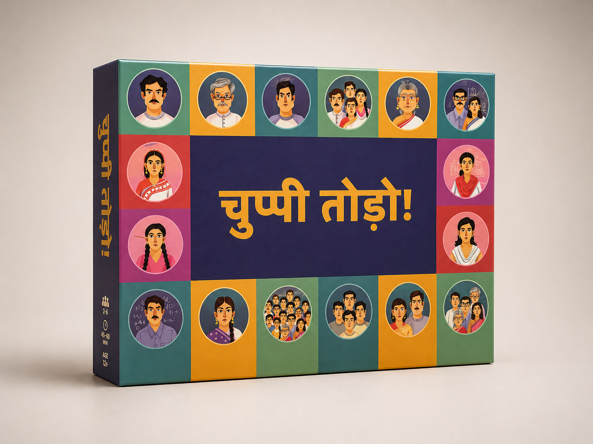

Domestic violence literacy, referral pathways, and institutional support as a playable system — built for frontline workers and community educators.

About the game
Chuppi Todo — Break the Silence — is a game for frontline health and community workers navigating the institutional response to domestic violence. Players build knowledge of referral pathways, legal protections, and support mechanisms — and experience the barriers that prevent survivors from accessing them.
The game is built around a practical gap: frontline workers often carry the first point of contact with survivors, but lack the knowledge, confidence, and institutional support to respond effectively. Chuppi Todo is a rehearsal environment for building that capacity — safely, in community, before the real encounter.
01 — Design
Built through sustained co-design with ASHA workers, anganwadi facilitators, district protection officers, and NGO practitioners working on gender-based violence response. Design workshops were run across several states to ensure scenarios reflected real local contexts.
The research question: what does a frontline worker need to feel equipped — not just informed — to respond to a disclosure of domestic violence? The distinction between knowledge and capacity shaped every design decision.
02 — Development
A board-and-card game designed for facilitated community and frontline worker training.
Real-scenario cards drawn from documented case patterns — each presenting a survivor situation, a frontline worker context, and a decision point.
The game board maps institutional referral pathways: one-stop centres, police, legal aid, shelters, health services. Players navigate toward the right support for each scenario.
Barrier cards introduce the social, institutional, and informational obstacles that prevent survivors from accessing support — making the problem structural, not personal.
Facilitated play for 6–20 participants. 2–3 hours. Designed for ASHA/AWW training, district protection officer induction, and NGO frontline worker capacity building.
03 — Deployment
Chuppi Todo is deployed through government health systems, protection networks, and development organisation partners.
Embedded in frontline health worker training to build domestic violence response literacy alongside maternal and child health content.
Used in district women and child protection training to build knowledge of referral systems and case management protocols.
Deployed by women's rights and gender organisations as a community sensitisation and frontline capacity building tool.
Outcomes
Workers leave with practical response literacy — knowledge of pathways and confidence to use them.
Workers build a working map of institutional support systems and how to activate them on behalf of survivors.
Understanding structural barriers shifts the frame from individual failure to systemic challenge — building more effective response.
Rehearsing responses in a safe environment builds the confidence to respond effectively when real disclosures happen.
Workers practise navigating the gap between what institutions are supposed to do and what they actually do.


Use Chuppi Todo in your frontline worker training, district protection programme, or community capacity building initiative.
Get in touch →
Panchayat governance — rural planning, budgets, and the real trade-offs of local government.

Institutional systems repair — diagnose constraints and test interventions under governance trade-offs.

Community water crisis — governance, behaviour, and risk as a civic story and system.